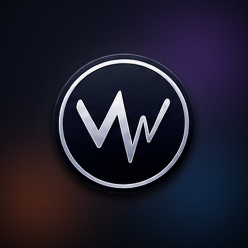
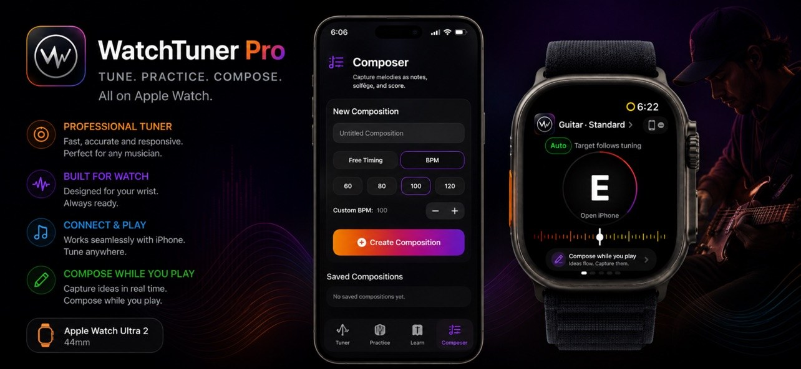
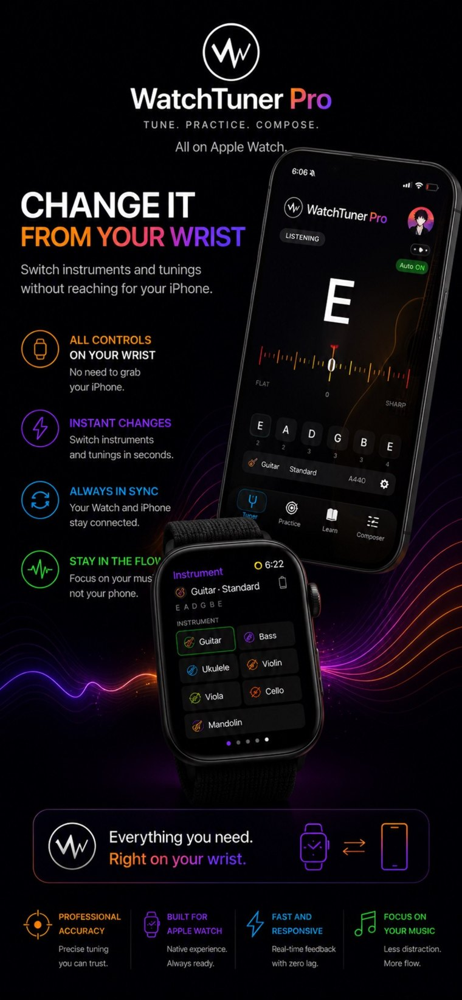
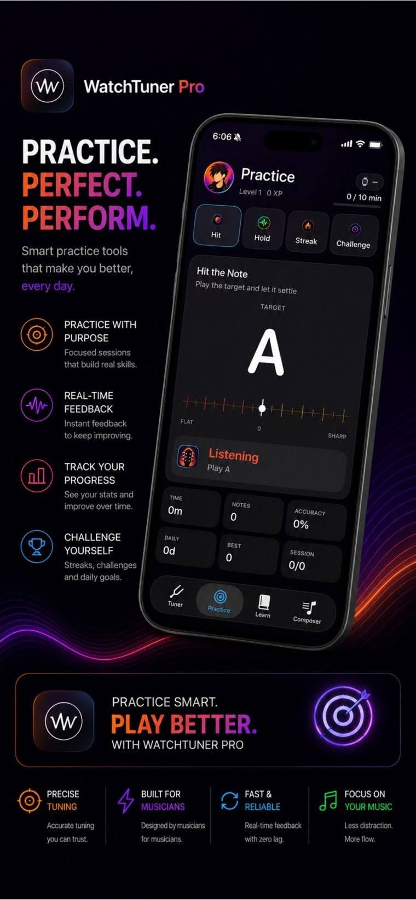

Afinador profesional
Afina con la lectura de la nota, su frecuencia y la desviación en cents, a la vista en tiempo real.

App de música · iPhone y Apple Watch
WatchTuner Pro reúne afinación, ejercicios, aprendizaje y composición en una sola app para músicos, con herramientas para distintos instrumentos y soporte para Apple Watch.

La app
Afina con la lectura de la nota, su frecuencia y la desviación en cents, a la vista en tiempo real.
Practica con ejercicios dentro de la app y mantén tu rutina sin cambiar de herramienta.
Recursos para aprender a tu ritmo y un compositor para guardar las ideas en cuanto aparecen.
Galería


Instrumentos
Cambia de instrumento y de afinación en segundos — también desde el Apple Watch, sin sacar el iPhone. Tu Watch y tu iPhone se mantienen en sincronía.
Práctica
Toca la nota objetivo y déjala afinada.
Mantén la nota estable el mayor tiempo posible.
Encadena notas correctas y estira tu racha.
Desafíos y metas diarias para no soltar el instrumento.
Funciones
Preguntas frecuentes
Un iPhone con la app instalada. Si además tienes Apple Watch, puedes usar sus funciones desde la muñeca.
Para guitarra, bajo, ukelele, violín, viola, violonchelo y mandolina — cambias de instrumento y de afinación en segundos.
Sí. Además del afinador, trae ejercicios interactivos y recursos de aprendizaje para avanzar a tu ritmo.
Descarga WatchTuner Pro y llévala en el bolsillo — o en la muñeca.